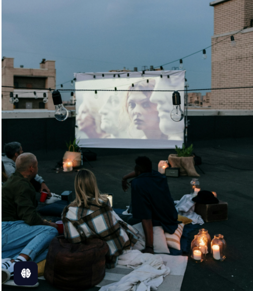
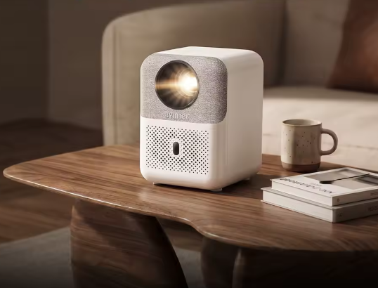
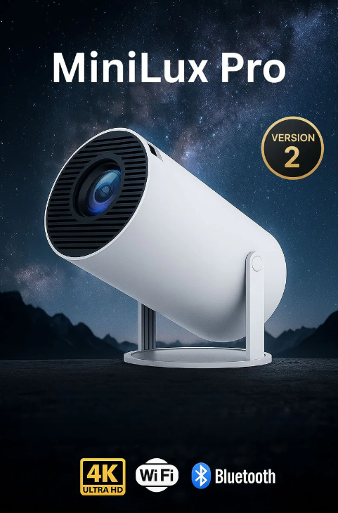
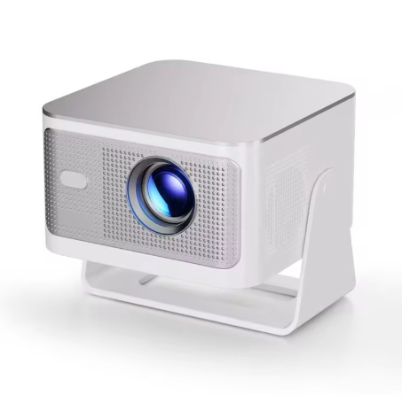
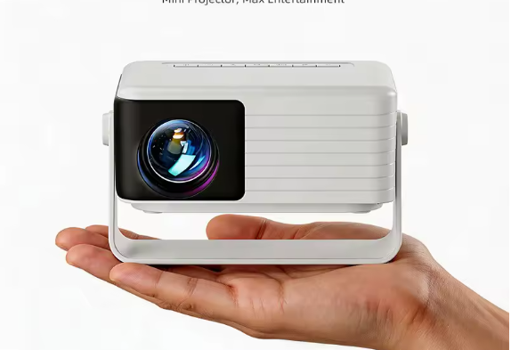
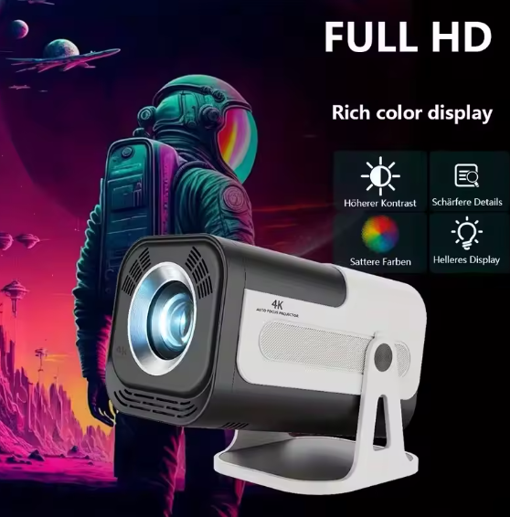
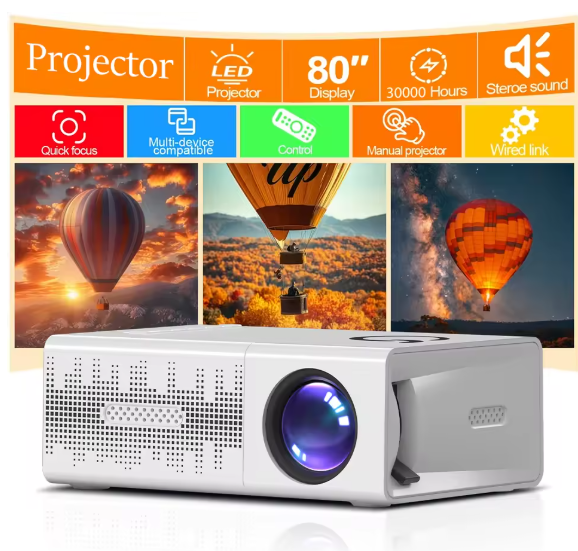
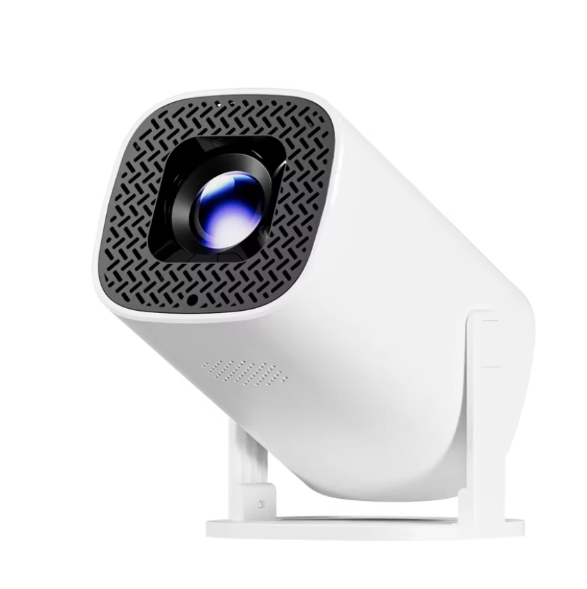

Bästa miniprojektorerna 2026: vi har testat 8 modeller
Vi köpte åtta miniprojektorer mellan 1 200 och 6 000 kronor och testade dem i riktiga hem under fyra veckor. Här är vår ärliga rankning.

Miniprojektorer har gått från pryl till vardagsverktyg på bara några år. Men marknaden är full av överdrivna lumen-siffror och vackra renderingsbilder som sällan stämmer när du sätter upp enheten i ditt eget vardagsrum. Därför köpte vi alla åtta modeller med egna pengar och testade dem i identiska miljöer: ett mörklagt vardagsrum, ett halvmörkt sovrum och en utomhuskväll i skymningen.
Varje projektor fick minst 12 timmars aktiv användning. Vi streamade Netflix och Disney+ via inbyggda appar och via AirPlay, mätte ljudnivåer, testade autofokus vid pauser mitt i filmen och noterade hur snabbt enheten blev varm. Vi ignorerade tillverkarnas marknadsföringslöften och fokuserade på det som faktiskt spelar roll när du sitter på soffan en tisdagskväll.
För att rangordna modellerna använde vi ett poängsystem på tio parametrar: bildkvalitet, ljusstyrka i praktiken, ljud, uppkoppling, användarvänlighet, portabilitet, byggkvalitet, app-stöd, värde för pengarna och långtidshållbarhet. Ingen tillverkare visste vilka enheter vi testade förrän artikeln var publicerad.
Så testade vi
Alla projektorer projicerades mot en 100-tums duk med gain 1,0 och mot en vit vägg för jämförelse. Vi använde en Colorimeter för grundläggande färgmätning men lät även tre personer utan teknisk bakgrund betygsätta bildkvaliteten blindt. Det visade sig konsekvent att upplevd skärpa och kontrast inte alltid följer specifikationstabellen.
WiFi-testerna kördes på ett hemmanätverk med både WiFi 5 och WiFi 6-router för att se om generationen på projektorn faktiskt påverkar buffring. Läs mer i vår guide om WiFi i projektorer.
Topp 8 listan
#1 Epson EF-12 8,7/10

Laserljuskällan ger stabil färgbild även efter hundratals timmar. Android TV är inbyggt och fungerar smidigt. Dyrast i testet men också den enda som känns som en permanent hemmabiolösning snarare än en reservlösning.
Fördelar
- + Skarp bild
- + Bra inbyggt ljud
- + Pålitlig autofokus
Nackdelar
- − Hög prislapp
- − Tung
- − Kräver fast montering för bäst resultat
#2 MiniLux Pro 8,4/10

MiniLux Pro placerar sig högt tack vare kombinationen av rotationsfot, WiFi 6 och 480 ANSI lumen som håller vad den lovar i mörkt rum. Autofokus och keystone fungerade felfritt i våra tester. Vi har publicerat en separat långrecension om du vill gå djupare.
Fördelar
- + Rotationsfot för takprojicering
- + Stabil WiFi 6-streaming
- + Bra pris/prestanda
Nackdelar
- − Inbyggt ljud mediokert
- − Ej äkta 4K
- − Fläktljud vid maxljus
#3 MiniLux Pro 2 8,2/10

Uppgraderingen mot föregångaren är mätbar: ljusare bild, snabbare autofokus och förbättrad ljudkvalitet. Inte tillräckligt för att slå Epson i absoluta topp, men bättre val om du vill ha mer ljus än original Pro utan att betala premium. Se vår recension av Pro 2.
Fördelar
- + Högre ljusstyrka än Pro
- + Snabbare chip
- + Samma smidiga formfaktor
Nackdelar
- − Marginellt dyrare
- − Fortfarande 1080p
- − App-butiken begränsad
#4 XGIMI Horizon Go 7,9/10

Kompakt och välbyggd med bra integrerad stativlösning. Bildkvaliteten är ren men ljusstyrkan sjunker märkbart om du inte mörklägger rummet helt.
Fördelar
- + Premiumkänsla
- + Bra HDR-hantering
- + Tyst drift
Nackdelar
- − Dyr i förhållande till lumen
- − Begränsad ljudbas
- − Ingen rotation
#5 Anker Nebula Capsule 3 7,6/10

Rolig formfaktor och bra batteritid för utomhus. Bilden är mjukare och mindre skarp än topp tre, men för terrass och camping fungerar den utmärkt.
Fördelar
- + Portabel
- + Google TV
- + Batteri
Nackdelar
- − Lägre upplösning
- − Svag ljusstyrka inomhus
- − Liten bildyta
#6 BenQ GV30 7,4/10

Brett ljud för sin storlek och snygg design. Bilden drabbas av regnbågseffekt om du sitter nära sidan, vilket begränsar den som primär hemmabiolösning.
Fördelar
- + Bra ljud
- + Snygg
- + Enkel setup
Nackdelar
- − DLP-regnbåge
- − Medel ljusstyrka
- − Trög app-start
#7 Vankyo Leisure 3 6,8/10

Budgetvinnare om du bara vill prova projektor utan stor investering. Acceptabel bild i mörker men tydligt sämre skärpa och färger än övriga fältet.
Fördelar
- + Lågt pris
- + Lätt att komma igång
- + Många ingångar
Nackdelar
- − Hög bullernivå
- − Överdriven lumen-marknadsföring
- − Kort livslängd på lampa
#8 Generic 1080p LED (Amazon-bästsäljare) 6,2/10

Representerar dussintals identiska OEM-modeller. Fungerar för enstaka kvällar men vi kan inte rekommendera den som långsiktig lösning. Se vår guide om ljusstyrka för att förstå varför siffrorna lurar.
Fördelar
- + Billig
- + Leverans snabb
- + OK som backup
Nackdelar
- − Saknar garanti i praktiken
- − Dålig färgåtergivning
- − Ingen mjukvaruuppdatering
Köpråd
Välj Epson om budgeten tillåter och du vill ha en lösning som står kvar i fem år. Välj MiniLux Pro om du vill ha bästa balansen mellan pris, funktioner och vardagsanvändning i sovrum och vardagsrum. MiniLux Pro 2 är rätt om du redan vet att du behöver mer ljus eller snabbare autofokus.
För utomhus och resor: Nebula Capsule 3. Undvik generiska Amazon-modeller om du planerar att titta mer än en gång i månaden. Oavsett val: investera i en rimlig duk eller läs vår artikel duk eller vägg innan du bestämmer dig.
Vill du jämföra MiniLux-modellerna direkt? Läs MiniLux mot MiniLux Pro.